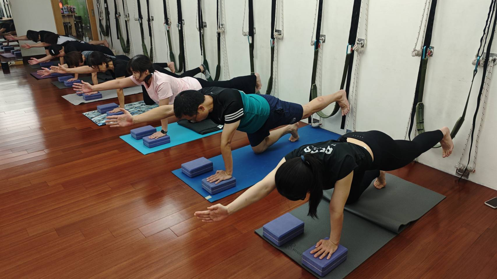

骨盆前傾，壁繩瑜伽怎麼練？解鎖緊繃髖前側、喚醒深層核心與臀肌的力學對位

- 下交叉症候群力學失衡：骨盆前傾是髂前上棘（ASIS）與髂後上棘（PSIS）連線傾角大於 15 度。關鍵在於前側「髂腰肌與股直肌過度緊縮」，引發後側「臀大肌與深層腹橫肌交互抑制性失憶」。
- 地面核心訓練的代償陷阱：在墊上硬做仰臥起坐，無力的腹肌會迫使強勢的髂腰肌代償發力，反而把腰椎向前拉扯，加劇腰薦椎後關節夾擠。
- 壁繩 30%–70% 卸載同步解鎖：利用壁繩承擔自重，在腰椎零重力壓縮的安全條件下，同時完成「伸展髖前側」與「閉鎖鏈激活臀大肌與腹橫肌」。
- 脊柱病變紅旗：若伴隨後仰劇烈錯位刺痛（腰椎滑脫）、下肢電擊麻痛或會陰麻木大小便異常（馬尾症候群），嚴禁運動，必須立即就醫。
明明體重很輕、四肢纖細，小腹卻總是往前凸出一塊；站久了下背總是酸脹不堪，躺在床上平躺時腰部懸空得能塞進一個拳頭——這正是現代久坐族群極為普遍的「骨盆前傾（Anterior Pelvic Tilt）」。許多人試圖透過每天狂做捲腹、棒式或仰臥起坐來改善，結果小腹依然微凸，下背痛反而加劇。在人體生物力學中，骨盆前傾從來不是單純「腹部沒力氣」，而是一組複雜的骨盆肌力失衡交叉網絡。若沒有解決緊繃的關節力線，單純用力只會越練越歪。
解剖力學機轉：骨盆前傾的「下交叉症候群」密碼
人體的骨盆宛如一個盛滿水的骨盆碗，其矢狀面角度由環繞其周圍的四大肌群張力相互牽制平衡。醫學上將這種失衡稱為捷克神經復健之父 Janda 提出的「下交叉症候群」：
- 1. 前下方與後上方：過度緊縮強勢肌群（Tight Muscles）：長時間處於 90 度屈髖坐姿，深層的「髂腰肌（Iliopsoas：起於 L1–L5 椎體橫突，止於股骨小轉子）」與大腿前側的「股直肌（Rectus Femoris）」長期處於被動縮短狀態，逐漸硬化痙攣；同時，下背部的表層「豎脊肌與腰方肌」因骨盆前傾而代償性持續過度收縮。這兩條強勢線如同縮短的鋼索，硬生生將骨盆前緣向下拽、後緣向上提。
- 2. 前上方與後下方：神經抑制失憶肌群（Weak / Inhibited Muscles）：根據神經生理學的交互抑制法則（Reciprocal Inhibition），當前側髂腰肌長期高頻放電時，大腦會反射性抑制後側拮抗肌——「臀大肌（Gluteus Maximus）」的運動神經元，導致嚴重的死臀症候群；同時，前側負責束緊腹部的「腹橫肌（Transverse Abdominis）」與「腹內斜肌」長期處於被動拉長狀態，失去向後推擠骨盆回正的動態張力。
- 3. 骨盆傾角量化標準：正常的骨盆在矢狀面上有 7 至 15 度的微幅前傾角（ASIS 與 PSIS 連線與水平面的夾角）。當傾角超過 15 度以上，腰椎前凸弧度（Lumbar Lordosis）過大，體重重心向前位移，逼迫腰薦椎（L5–S1）的小面關節（Facet Joints）緊緊嵌頓碰撞，引發難耐的慢性下背酸痛。
地面訓練的常見死局：為什麼仰臥起坐反而是「雪上加霜」？
許多人在發現自己小腹凸出、骨盆前傾後，第一反應就是做徒手核心訓練。但在沒有任何支撐的地板上，骨盆前傾者通常會陷入難以逃脫的代償陷阱：
進行仰臥起坐或平躺雙腿抬腿動作時，軀幹屈曲前 30 度主要由腹肌啟動，但超過 30 度之後的強烈屈髖動作，主力肌正是本已過度緊張的「髂腰肌」。由於深層腹橫肌早已休眠，身體為了完成動作，大腦會本能地命令強勢的髂腰肌瘋狂代償收縮。結果腹肌沒被激活，髂腰肌反而被鍛鍊得更加緊繃肥厚，將腰椎更兇猛地向前扯出更極端的弧度，引發嚴重的下背深層發炎。

壁繩瑜珈的解剖優勢：打破惡性循環的兩步同步對位
壁繩瑜珈並非傳統瑜珈動作的簡單變形，而是一套嚴謹的「重力卸載與神經肌肉再教育系統」。在處理骨盆前傾時，壁繩展現出不可替代的三大物理機制：
1. 30%–70% 自重物理卸載，解除腰椎剪切力
利用高強度登山級骨盆吊帶將薦骨托住，學員可以將大比例的體重掛載於水泥牆面的化學錨栓上。在這種卸載狀態下，腰椎間盤內部的重力壓縮瞬間降至零，後小面關節的嵌頓嵌壓被徹底拉開，消除了身體因疼痛而啟動的保護性背肌痙攣。
2. 「拉開前側」與「收緊後側」在同一個動作閉鎖鏈中發生
在壁繩輔助的懸掛低弓箭步中，繩索穩固鎖定骨盆中立位，防止骨盆隨腰椎前塌。學員可以在完全不壓迫下背的條件下，精準將後側腿的髂腰肌與股直肌拉長至生理極限；同時，藉由雙手拉握壁繩與前腳扎根的閉鎖鏈反饋，大腦能無阻礙地重新連線臀大肌進行等長收縮，實現「前側離心延展、後側主動徵召」的完美神經重置。
3. 喚醒「內建束腹帶」腹橫肌
在壁繩棒式或懸掛骨盆微調中，因為繩索消除了搖晃不穩的恐懼，學員能從容專注於橫膈膜呼吸：在吐氣時將肚臍向內向上微收，感受骨盆底肌與腹橫肌如天然馬甲般由外向內環抱腰椎，將內臟重新穩固承托回骨盆腔底，徹底消除假性小腹。
告別腰痠小腹凸，讓骨盆真正回歸自然中立
骨盆前傾角度有多大？是單純髂腰肌緊繃還是骨盆旋轉代償？鑫彥瑜珈提供首次 NT$299 AI 體態檢測，現場以 2D 幾何力線精準量測 ASIS 與 PSIS 傾角，由資深老師當面為您拆解動力鏈，規劃專屬於您的壁繩調整方案。
預約首次 NT$299 AI 體態檢測（含骨盆傾角精準解讀）腰椎結構急症紅旗（Red Flags）
生命安全重於一切：若骨盆前傾伴隨以下任何紅旗警訊，屬於嚴重結構性病變或神經根壓迫，嚴禁自行進行核心訓練或大幅度伸展，請立即前往骨科或神經外科診療：
1. 腰椎滑脫症（Spondylolisthesis）：腰部向後仰或久站時出現劇烈尖銳刺痛，伴隨腰椎骨骼有階梯狀「滑脫錯位感」，向前彎腰反而稍微舒服（需 X 光或 MRI 排查椎弓崩裂與二度以上滑脫，滑脫者嚴禁進行大後彎體位！）。
2. 坐骨神經根性放射痛：下背痛沿著臀部深層（梨狀肌）、大腿後側如高壓電擊般直竄小腿肚外側、腳背或腳趾，伴隨腳趾背屈或蹠屈無力。
3. 馬尾症候群（Cauda Equina Syndrome）：骨盆深處劇痛合併會陰部、肛門周圍「鞍區麻木失去知覺」，伴隨突發性急性尿滯留（膀胱脹滿卻尿不出來）或大便失禁（此為 48 小時黃金減壓手術急症！）。
常見問題
骨盆前傾為什麼光靠在瑜珈墊上狂做仰臥起坐或捲腹沒有用？
骨盆前傾在力學上屬於典型的「下交叉症候群（Lower Crossed Syndrome）」。其根本病理在於深層髂腰肌（腰大肌與髂肌）及股直肌長年痙攣短縮，將骨盆向前下方死死牽拉。當你在地面做傳統仰臥起坐或抬腿時，無力的腹肌往往無法對抗重力，大腦會立刻徵召強勢的髂腰肌代償出力，反而將腰椎向前猛烈拖拽，使腰椎前凸角度與小面關節剪切力進一步加劇，造成越練腰越痠。
壁繩瑜珈在矯正骨盆前傾上，與傳統徒手訓練有何本質優勢？
核心差異在於「自重物理卸載」與「前伸後收的同步神經重構」。壁繩懸掛帶可承擔 30% 至 70% 的體重，消除地面抗重力時的防禦性下背緊繃。在壁繩輔助弓箭步或骨盆後傾懸吊中，學員能在腰椎「零受壓」的安全窗格內，徹底拉長短縮的髂腰肌；同時藉由神經交互抑制，自動喚醒沉睡已久的臀大肌與腹橫肌，達成『前面放鬆、後面收緊』的雙向動力平衡。
骨盆前傾導致的「假性小腹微凸」，能透過壁繩瑜珈改善嗎？
可以顯著改善外觀。骨盆前傾時，腸道與內臟受到前傾骨盆與鬆弛腹壁的推擠，在重力作用下自然向前下方垂墜位移，形成即使體脂不高也消不掉的『假性小腹』。透過壁繩重構骨盆底肌與腹橫肌的束腹環狀張力，並將髂前上棘（ASIS）與恥骨聯合拉回同一個垂直冠狀面，內臟會重新獲得穩固骨盆承托，腹部線條自然平坦收緊。
完全沒有運動基礎、核心極弱的人，適合直接練壁繩骨盆調整嗎？
非常適合。壁繩的設計初衷正是為初學者、僵硬族群與代償嚴重者提供堅實支撐。一般徒手運動需要先有足夠核心力量才能維持中立，對初學者門檻極高；壁繩則是由外部工業級動力繩分擔重力，讓你在有依靠的條件下逐步感知『骨盆後傾微調』的肌肉控制感，完全不用擔心摔倒或因肌力不足而受傷。
骨盆前傾伴隨哪些下背症狀時，屬於必須立刻就醫排查的骨科急症？
若腰痛伴隨『腰部向後仰時出現劇烈尖銳刺痛並伴隨骨骼滑移錯位感（高度懷疑二度以上腰椎滑脫症 Spondylolisthesis）』；疼痛沿著臀部、大腿後外側呈電擊般劇痛直竄腳底（急性坐骨神經痛）；或是出現『會陰部麻木失去知覺、大小便排泄功能障礙（馬尾症候群 Cauda Equina）』，必須立即前往骨科或神經外科就醫，嚴禁自行進行任何運動！